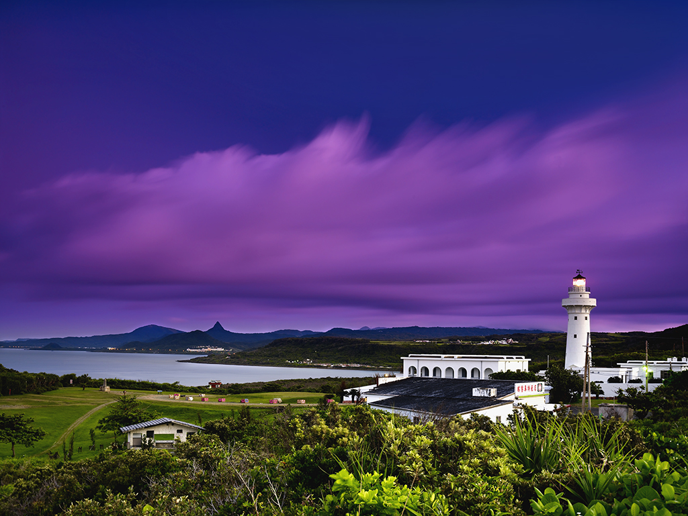

台灣的天涯海角，陽光、沙灘與碧海藍天的度假天堂

墾丁國家公園位於台灣本島最南端的恆春半島，是台灣第一座國家公園。這裡三面環海，東鄰太平洋、南臨巴士海峽、西瀕台灣海峽，擁有發達的裙礁海岸、綿延的潔白沙灘以及獨特的特殊熱帶氣候。墾丁以濃厚的南洋度假風情聞名全球，湛藍清澈的海水、豐富的珊瑚礁生態與刺激的海上活動，讓這裡成為台灣最受歡迎的避暑與水上運動聖地。無論是探訪地質奇景，還是躺在沙灘上享受日光浴，墾丁都能帶給旅客滿滿的南國熱情。
位於台灣最南端的純白塔身燈塔，是著名的台灣八景之一。燈塔背山臨海，圍繞著大片的翠綠草坡與巨礁。夜間發出的光芒可達 27.2 浬，是全台光力最強的燈塔，也是觀賞南台灣巴士海峽海景與夜間觀星的絕佳地點。
墾丁最具代表性的兩大沙灘。南灣沙質細柔、海浪平緩，聚集了香蕉船、水上摩托車、衝浪等各式刺激活動；而白沙灣則因陽光下耀眼的白砂而得名，更是國際大導演李安電影《少年PI的奇幻漂流》中老虎登陸的經典取景地。
每當夜幕低垂，墾丁路便會搖身一變成為熱鬧非凡的「墾丁大街夜市」。街道兩旁擺滿琳瑯滿目的在地小吃、充滿南洋風情的調酒吧與紀念品攤位，遊客穿著夾腳拖與海灘褲穿梭其中，能感受到全台最chill的夜生活氛圍。